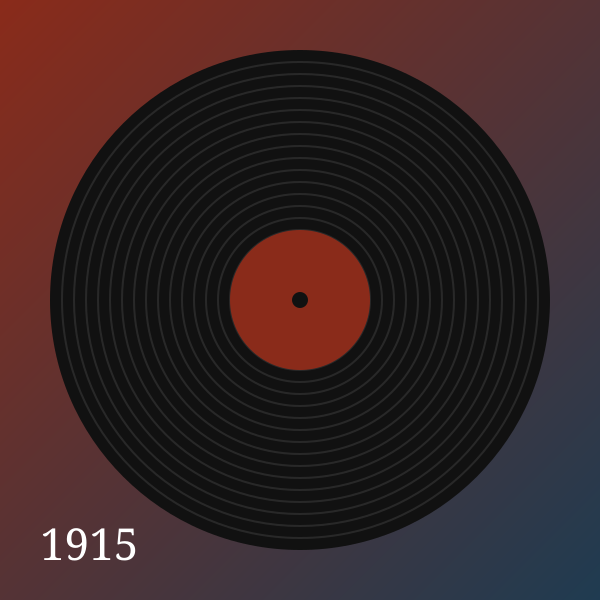

吉田奈良丸, “勝田新左エ門” (Victor 50181–50182; catalogue year 1915)

Background: Kotobank's entry in the Nihon Daihyakka Zensho identifies 勝田新左衛門武堯 (Katsuta Shinzaemon Taketaka, 1680–1703) as an Akō retainer and one of the forty-seven rōnin who attacked Kira's residence on 14 December 1702 and were ordered to commit seppuku on 4 February 1703. This establishes that the named person belongs to the Akō vendetta tradition; it is not proof that the recording narrates the raid, nor that it expresses the same moral interpretation as later Chūshingura works.